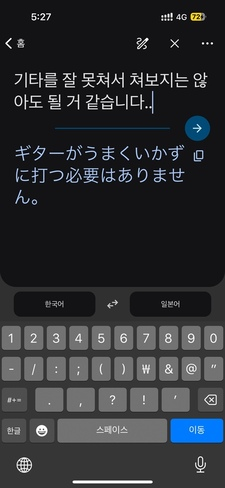
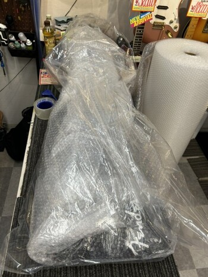
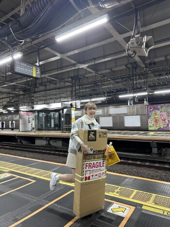

2. 둘째날, 御茶ノ水(오차노미즈역)
두 번째 날은 일본의 악기점들이 모여있는 오차노미즈역으로 향했다.
더이상 악기들이 많은 곳들이 남아있지 않아서
반드시 이날은 기타를 사야만 했다.
이쯤에서 내가 찾아다니던 디자인의 기타를 첨부해 보겠다.


(진짜.. 진짜 눈 돌아갈만큼 이쁘다 색이 완벽하다)
내가 찾는 색상 + 바인딩(하얀색 테두리)가 있는 모델은 정말 희귀하고 구하기 어려웠다.
중고로도 매물이 없었고, 같은 색 이름을 검색해도 아래 사진처럼 미묘하게 색이 다른 기타만 주구장창 나왔다.

그러다가 거의 마지막으로 간 매장에서 발견한 기타이다. 사실 내가 찾던 색상은 아니었지만, 그나마 찾아다닌 것들 중에선 찾던것과 흡사했고, 더이상 기회가 없었으므로 만족하고 구매를 해야만 했다.
고민을 거의 하지 않고, 이 제품으로
구매하겠다고 의사를 전했다. 직원분은 한 번 쳐보고 가져가라고 하셨지만 나는 사실 기타를 잘 치지 않아서 부끄러웠기
때문에..
이렇게 거절했더니 직원분이 빵 터지셨다.

기타는 156,200엔이었지만 면세가로 142,000엔에 구매할 수 있었고, 한화로 약 122만원에 구매했다. 한국에서 해당
모델을 신품으로 구매하려면 적어도 140~150만원은 들었을 것이다.

비행기 규정상 기내로 반입이 어렵고 수하물로 부쳐야 했기 때문에 너무 불안한 마음에 열심히 포장해주실 것을
요청드렸고, 감사하게도 한시간동안 포장만 열심히 도와주셨다.

신이난 내모습이다.
포장을 워낙 열심히 해두었기 때문에 중간에 포장을 풀어버리면 다시 포장할 수가 없어서, 일본에 있는 11일 내내 꽁꽁 싸맨 채로 둬야 했다.